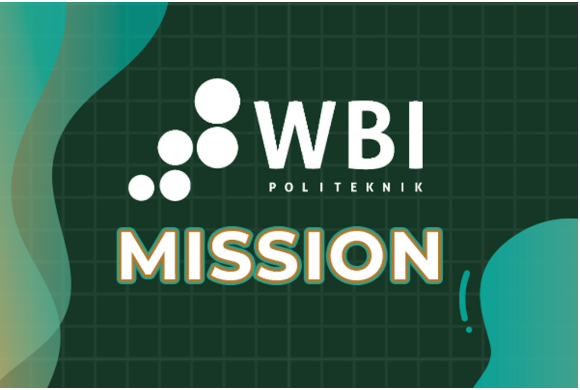
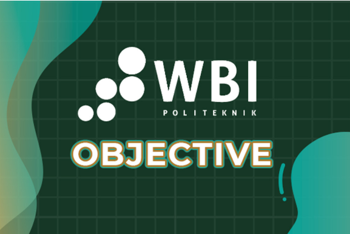

Menjadi Politeknik yang unggul dalam pendidikan vokasional dan entrepreneurship untuk pembangunan bangsa.
MISI

-Menyelenggarakan dan mengembangkan pendidikan vokasi melalui penggunaan ilmu pengetahuan dan teknologi terapan terbaik, serta penanaman entrepeneurial mindset untuk dapat memberikan solusi strategis terhadap pembangunan bangsa.
-Menyelenggarakan penelitian dan pengabdian kepada masyarakat yang bermutu dan relevan dengan pendidikan vokasional serta tantangan nasional dan global.
-Menginteregrasikan entrepeneurial mindset pada seluruh kegiatan tridarma dan aktivitas lainnya yang diselenggarakan di Politeknik WBI.
TUJUAN

-Menghasilkan lulusan yang memiliki kemampuan teknis terapan yang berdaya saling tinggi dengan penguasaan ilmu dan teknologi terapan yang baik.
-Menghasilkan penelitian dan kegiatan pengabdian masyarakat yang berkualitas dan mendukung darma pendidikan serta dapat memberi manfaat bagi masyarakat, baik skala nasional maupun internasional.
-Menghasilkan lulusan dengan entrepreneurial mindset yang mandiri, adaptif, kreatif, inovatif, dan memberi solusi atas berbagai permasalahan di dalam masyarakat.